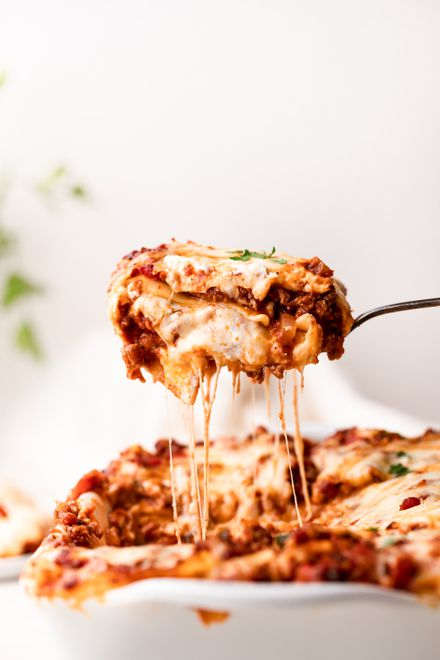

This is a recipe called Brenda's lasagna. It's a mix of lean ground beef, noodles, different types of cheeses, spaghetti sauce, and a seasoning of salt and pepper. It's great!
Step 1
Bring a large pot of lightly salted water to a boil. Add pasta and cook for 8 to 10 minutes or until al dente; drain.
Step 2
Preheat oven to 350 degrees F (175 degrees C). In a large skillet over medium-high heat, brown beef and season with salt and pepper; drain. Stir in spaghetti sauce and garlic and simmer 5 minutes.
Step 3
In a medium bowl, combine mozzarella, Cheddar and ricotta; stir well. In 9x13 inch pan, alternate layers of noodles, meat mixture and cheese mixture until pan is filled.
Step 4
Bake in preheated oven for 30 minutes, or until cheese is melted and bubbly.